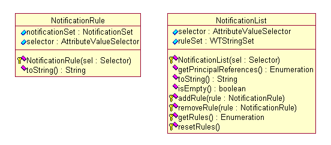
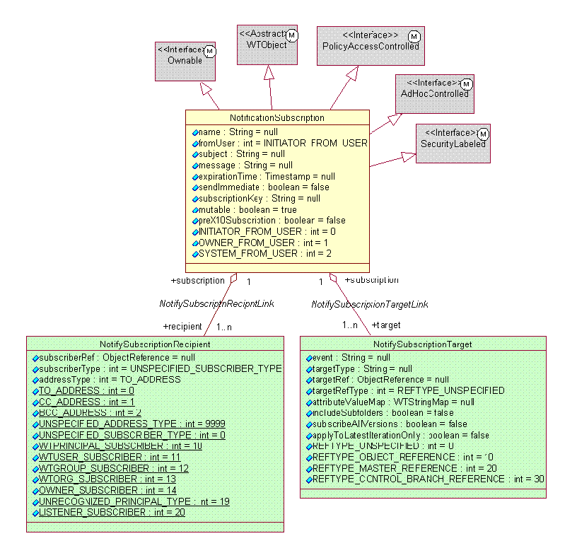

See: Description
| Interface | Description |
|---|---|
| Notifiable |
This is an interface that should be implemented by classes supporting
object event notification.
|
| NotificationManager |
NotificationManager provides client invokable methods to notification
services.
|
| Class | Description |
|---|---|
| _NotificationSubscription | |
| _NotifySubscriptionRecipient | |
| _NotifySubscriptionTarget | |
| _ObjectSubscription | |
| CompositeNotificationSubscription |
Contains all the parts that make up a Notification
subscription.
|
| NotificationHelper |
Helper class to allow easy access to the NotificationManager functions.
|
| NotificationSet |
A notification set associates a message with a list of recipients.
|
| NotificationSubscription |
Contains the common attributes for a Notification
subscription.
|
| NotifySubscriptionRecipient |
Contains the information specific to a notification
subscription recipient (also known as a subscriber).
|
| NotifySubscriptionTarget |
Contains the information specific to a notification
subscription target object.
|
| ObjectSubscription | Deprecated
This class is for pre-R9.0 subscriptions.
|
| StandardNotificationManager |
Standard implementation of the notification service
interfaces.
|
The Notification manager is responsible for defining and executing notifications. Notifications can be defined through a notification policy or through object, folder, or container subscriptions. These defined notifications are triggered by events.
The notification policy design follows the
pattern for administrative policies.
Notification policies and subscriptions can
only be defined for objects that are notifiable. For an object to be
notifiable, its class must implement the Notifiable interface. This interface
contains no methods, but a notifiable object holds the set of events that have
been subscribed to for that object, folder, or container.
Notification policies and subscriptions for
an object result in a notification message being sent to the specified
principals whenever an event occurs for the object that satisfies a
notification policy or subscription definition for the object. In the case of
folder or container subscriptions, the subscription can be for the folder or
container themselves meaning whenever a subscribed event occurs for the folder
or container object a notification message is sent. Additionally, a folder or
container subscription can be specified for object types contained in the
folder or container meaning whenever a subscribed event occurs for objects of
those types contained in the folder or container a notification message is
sent.

Notification Policy
A notification policy is composed of many
rules represented by NotificationRule objects. Each rule contains an
antecedent: a Selector object composed of a domain, type, and event, and a
consequent: a NotificationSet object (identifying the principals to receive the
notification). Similarly, each notification list contains a selector (that
works as a locator for the list) and a rule set. The difference between lists
and rules is that lists are entirely derived from the rules by evaluating all
rules that may possibly apply to a selector (for example, a rule that refers to
a more general type also applies to derived types). Notification lists, once
constructed, are stored persistently and cached for performance reasons. The message
sent as a result of a notification policy is very simple. It basically informs
the recipient that the event that triggered the notification occurred for the
object in question.
The NotificationManager interface supports
the notification functionality with methods for managing rules as well as
methods for event subscriptions on objects, folders, or containers. Besides
providing these methods for storing and retrieving lists, the
StandardNotificationManager also listens for events that trigger notifications
based on the notification policy lists or on object, folder, or container
subscriptions. Notifications to be sent are not performed immediately, but
rather queued for asynchronous execution.
Notifications can be sent to users either as
a result of a notification policy or an object, folder, or container
subscription created by a service or application. For example, the properties
page for some objects contains a subscription menu item that allows users to
subscribe to events on the object. Similarly folder and some container property
pages contain a subscription menu item to subscribe to events on the folder or
container and/or events for object types contained in the folder or container.
Container subscriptions are limited to application, library, and program
containers. The following figure shows the main classes involved in ad hoc
notifications (or subscriptions).

Ad Hoc Notification
The NotificationSubscription class supports
ad hoc notification. Subscriptions are ownable. By default the subscription
owner is the subscription creator.
Subscriptions can have one or more recipients
represented by the NotifySubscriptionRecipient class. Recipients can be either
principals or listener objects. If the recipient is a principal, a notification
message is sent when an event triggers the notification subscription. Listener
objects are objects whose class implements the ObjectSubscriptionListener
interface that defines the notifyObjectEvent method. If the recipient is a
listener object, the subscribed object�s notifyObjectEvent method is invoked
when an event triggers the notification subscription.
Subscriptions can have one or more targets
represented by the NotifySubscriptionTarget class. Targets are objects,
folders, or containers. Currently a subscription cannot mix target types
meaning the targets have to be all objects, all folders, or all containers.
The Notification Manager methods can be
accessed through the NotificationHelper class.
The users that are the final recipients of
notification messages must have an e-mail attribute defined. Additionally, for
messages generated by notification policies and subscriptions, the user must
have read access over the object to which the event occurred.
Although the notification policy mechanism
can use any event posted by any service, in practice the notification is
limited to the events listed in the wt.admin.adminEventResource class because
these are used by the administrator client to construct rules. The events must
also be listed in the subscriptionConfig.xml file.
For subscriptions the events are also
configured in the subscriptionConfig.xml file. This file not only configures
the events, but it also configures the object types the events apply to and
what are called event categories. Event categories are used to group related
events under a single category. When subscribing to an object, folder, or
container through the subscription UI it is these categories that are presented
to select from rather than every single event that can apply for the object
type. The reason for this is to avoid presenting a large list of events on the
UI to choose from. For example, if the Check Out/Check In category were selected,
the subscription would be for the check out, check in, and undo check out
events. The types events apply to are used to determine which categories to
display in the UI when subscribing to an object, or selecting types for folder
or container subscriptions. Only event categories that contain events that
apply to the object type or types selected for the folder or container are
displayed.
No event is generated. However, this service
listens to the events specified in the notification policy rules.
The list of events for the notification
service includes the following in addition to events defined in subscriptionConfig.xml:
/wt.admin.AdministrativeDomainManagerEvent/POST_CHANGE_DOMAIN
/wt.fc.PersistenceManagerEvent/POST_DELETE
/wt.vc.wip.WorkInProgressServiceEvent/POST_CHECKIN
/wt.vc.wip.WorkInProgressServiceEvent/POST_UNDO_CHECKOUT
/wt.fc.PersistenceManagerEvent/
/wt.fc.PersistenceManagerEvent/
/wt.vc.VersionControlServiceEvent/NEW_ITERATION
/wt.vc.sessioniteration.SessionIterationEvent/POST_COMMIT_SESSION_ITERATION
/wt.preference.PreferenceServiceEvent/POST_UPDATE